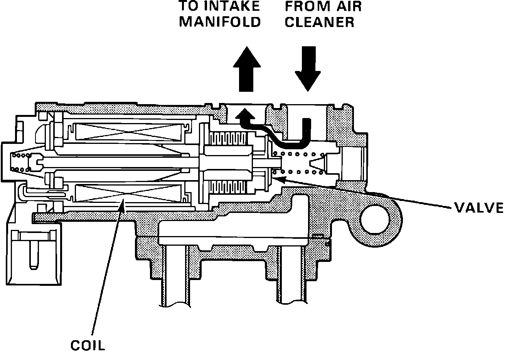

Idle Speed/Throttle Actuator - Electronic: Description and Operation
Idle Air Control (IAC) Valve:

The electronic air control valve (EACV) is mounted on the intake manifold. The EACV is powered by ignition switch terminal Ign. 1 and receives power anytime the ignition is turned ON. The ECU controls the ground circuit from pin A11. The valve is used to correct idle speed when out of normal operating parameters. Idle speed is modified by allowing air to bypass the throttle plate. By varying the current of the signal to the EACV the ECU is able to control the position of the EACV plunger. The EACV is used to provide a cold fast idle as well as a stable idle under normal operating conditions.